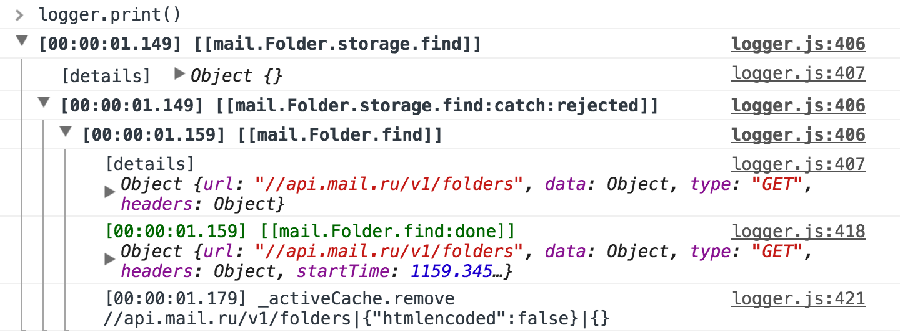

* — backend
// Получение списка тредов
Thread.find({folder: 8}).then(threads => {
// ...
});
RPC.intercept({
#! status: "invalid",
#!+ process(req) {
#!+ if (req.get("body.folder.error") === "not_open") {
// вернёт Promise
return openSecureFolderLayer({
folder: req.get("body.folder.value")
});
#!- }
#!- }
});
* name — поддерживаем нотацию
// Где-то получаем тред
Thread.findOne(123).then(thread => {
#!+ thread.get("messages.0").on("change:flags", () => {
// Реагируем на изменение флагов
#!- });
});
#!+ // Где-то письмо (которое входит в тред)
Message.findOne(345).then(message => {
#!+ // Инвертируем флаг
#!- message.set("flags.unread", !message.is("flags.unread"));
#!- });
const Thread = Message.extend({
#! className: "mail.Thread", // для логирования
#! findUrl: "threads", // Получение списка тредов
#! findOneUrl: "threads/thread", // Запрос за тредом
#!+ defaults: { // Свойства по умолчанию
...Message.fn.defaults,
length: 0,
**messages: new Message.List.Sorted**,
#!- }
});
// Письмо
const Message = RPCModel.extends({
defaults: {
// ...
attachments: new Attachment.List.Local(),
},
// Валидация атрибутов при изменении
valueValidator(newValue, attr, newAttrs, model) {
#! return check(attr, newValue) ? newValue : model.get(attr);
}
});
// Отсортированный список моделей
Message.List.Sorted = Message.List.extend({
comparator: {date: true} // desc
});
const Thread = Message.extend({
findOneUrl: "threads/thread"
#!+ findOneUrl(query) { return query.withoutQuote
? "threads/thread/short"
: "threads/thread"
#!- },
// ...
#!+ isDataFully(query) {
#! return this.is("messages.lentgh") || query.withoutQuote;
#!- }
});
Promise.all([
Folder.findOne(123), // Первый запрос
Thread.find({folder: 123}) // Второй :[
]).then(([folder, threads]) => {
// ..
});
RPC.batch(() => Promise.all([
Folder.findOne(123),
Thread.find({folder: 123})
])).then(([folder, threads]) => {
// ..
});
Folder.find().then(folders => { ... });

request.on("error", (evt, req) => {
saveToLog(req);
});
MoveTo.execute({
#! folderTo: 123, // id папки куда переносим
#! models: [...] // Массив Писем или Тредов (модели)
}).then(action => {
#!+ // Ссылка на модель Папки куда переместили
#!- const folderTo = action.folderTo;
#!+ // Список реально перемещенных моделей
#!- const affectedModels = action.models;
#!+ // Показывает нотификацию для отмены действия
#!- showUndoNotify().onUndo(() => action.undo());
});
const MyAction = Action.extend(/** @lends MyAction# */{
#!+ // Подготовка данных
prepare(params, options) {
return {computed: params.foo + params.bar};
#!- },
#!+ // Выполняемая операция
#!- operation({computed}, params, options) { /* … */ },
#!+ // Обратная операция
#!- undoOperation(data, params, options) { /* … */ },
#!+ // Откатываем изменения в случае ошибки при выполнении
#!- rollbackOperation() { }
});
require(["app/app", "logger"], function (app, logger) {
#!+ // Скрыть лоудер загрузки приложения
#!- app.ready(hideLoading);
#!+ // Перехват ссылок и запуск приложения
app.listenFrom(document, {
autoStart: true,
logger: logger
#!- });
});
const app = Pilot.create({
#! model: { /* модели доступные всем маршрутам */
#!+ "#letters": {
url: "/:folder", // "/inbox/", "/trash/" или "/123/"
#!+ model: { // модели конкретного маршрута
threads: ({params: {folder}}) => Thread.find({folder})
#!- }
#!- },
});
// Перейти на нужный маршрут
app.go("#letters");
app.go("#letters", {folder: "inbox"});
// Сформировать url
app.getUrl("#letters", {folder: 123});
"#letters": {
url: {
#! pattern: "/:folder",
#!+ params: {
folder: {
#! default: Folder.INBOX,
#! decode: (value) => TYPE2ID[value] || parseInt(value, 10),
#! encode: (value) => (value in ID2TYPE) ? ID2TYPE[value] : value,
}
#!- }
},
model: { /*...*/ },
// ...
}
export default {
// Статус ящика
status: ({params: {folder}}) => loadStatus(folder),
#!+ // Список папок
#!- folders: (req, waitFor) => **waitFor("status")**.then(status => status.folders),
#!+ // Текущая папка
folder(req, waitFor) {
if (req.is("#read-letter")) {
#!+ return Promise
.all([**waitFor("folders"), waitFor("letter")**])
#!- .then(([folders, letter]) => folders.get(letter.get("folder")));
} else {
#! return waitFor("folders").then(folders => folders.get(req.params.folder));
}
#!- },
#!+ // Список писем
#!- letters: (req, waitFor) => waitFor("status").then(status => status.letters),
#!+ // Письмо
letter: {
match: ["#read-letter", "#search-letter"],
fetch: ({params:{letter}}, waitFor) =>
waitFor("status").then(() => Thread.findOne(letter))
},
#!-
}
Кроме этого, ещё есть Медиаторы, но о них позже.
/Button/
import feast from "feast";
import template from "feast-tpl!./button.html";
// Используемые блоки
import UIIco from "ui-block/ico/ico";
/**
* @class UIButton
* @extends feast.Block
*/
export default feast.Block.extend(/** @lends UIButton# */{
name: "button",
template,
blocks: {
"ico": UIIco
}
});
<div title="{attrs.title || attrs.text}">
#!+ <bem:mod name="pressed" test="attrs.pressed && !attrs.disabled" />
<bem:mod name="borderless" test="attrs.borderless" />
<bem:mod name="primary" test="attrs.type == 'submit' || attrs.primary" />
<bem:mod name="size" value="{attrs.size}" test="attrs.size" />
#!- <bem:mod name="disabled" test="attrs.disabled" />
#!+ <fn:if test="attrs.ico">
<span **bem:elem="ico"**>
<bem:mod name="size" value="{attrs.size}" test="attrs.size" />
<bem:mod name="{'theme-'+attrs.theme}" test="attrs.theme" />
<**b:ico** name="{attrs.ico}" size="{attrs.size}"/>
</span>
#!- </fn:if>
#!+ <fn:if test="!attrs.short && attrs.text">
<span bem:elem="txt">{attrs.text}</span>
#!- </fn:if>
</div>
.button {
// бла-бла-бла
// Состояние: «нажата»
&:active, &_pressed {
// ...
}
// Основная кнопка
&_primary {
// ...
}
// Наличие иконки у кнопки
&_has-ico {
// ...
}
// и так далее
}
export default {
keywords: "btn кнопка",
cases: {
"base": {
attrs: [{text: "Написать"}]
},
"primary": {
attrs: [
{type: "submit", text: "Написать"},
{ico: "compose", type: "submit", text: "Написать"},
{ico: "compose", short: true, type: "submit", text: "Написать"},
{pressed: true, type: "submit", text: "Написать"}
]
},
}
};
<b:letter-status
name="unread"
#! state="{attrs.unread}"
#! remit:click="invert:unread"
/>
model и models
// Список тредов строится на основе Thread.List
<b:dataset-letters models="{attrs.model.threads}" />
// Вывод треда
<b:thread model="{attrs.model.thread}" />
<b:portal-menu
#! use:mediator="letters-actions letters-selection"
/>
// ...
<b:thread
model={attrs.model}
#! use:mediator="letters-actions"
/>
// Действия
import MarkAsAction from "jssdk/mail/actions/MarkAs";
import DeleteAction from "jssdk/mail/actions/Delete";
#!+ // Другие медиаторы
#!- import lettersSelection from "mediator/letters-selection";
#!+ export default feast.Mediator.create("letters-actions", {
components: {
#!+ "dataset-letters": { // имя для обращения внутри медиатора
#! "class": UIDatasetLetters,
#!+ // события, на которые подписывается медиатор
#!- "events": ["invert:unread", "delete", ...]
#!- },
#!+ "nav-folders": {
"class": UINavFodlers,
"events": ["drop", "move"],
**"handleEvent": "handleMoveTo"**
#!- },
// ...
},
handleEvent(evt) { /* ... */ },
handleMoveTo(evt) { /* ... */ },
// ...
#!- });
export default feast.Mediator.create("layout-manager", {
components: { /* ... */ },
handleEvent(evt) {
#!+ // Тип события
#!- const type = evt.type;
#!+ // Получаем список моделей от медиатора отвечающего за выделение писем
#!- const selectedModels = lettersSelection.getModels();
#!+
if (type === "delete") {
#!+ DeleteAction.execute({models: selectedModels})
.then(this._done)
#!- .catch(this._fail);
} else if (type === "move") {
// ...
}
#!-
#!+ swipeManager.reset(); // Закрываем свайпы
lettersSelection.reset(); // Сбрасываем выделение
#!-
#! // По завершению `handleEvent`, всем связанные блоки с медиатором будут обновлены
}
});